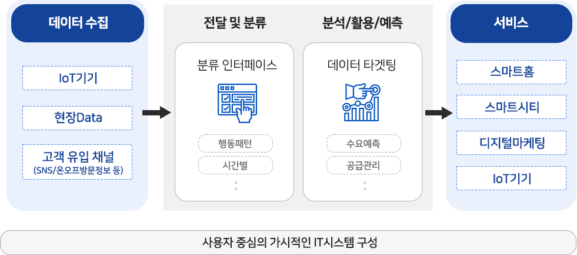
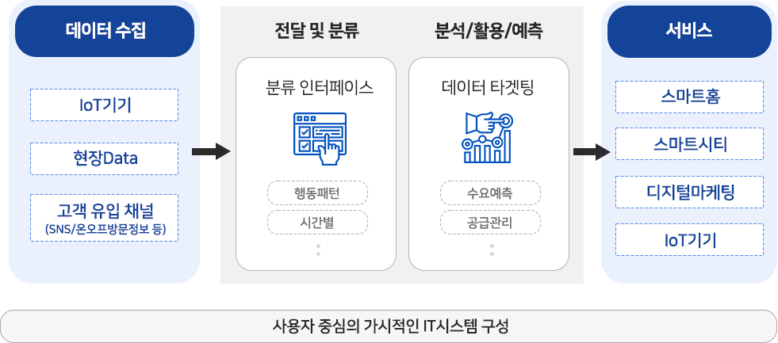
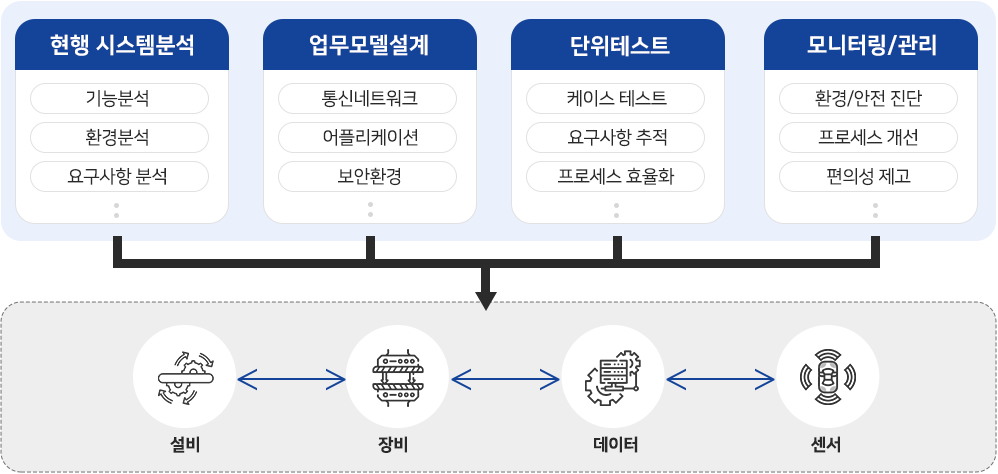
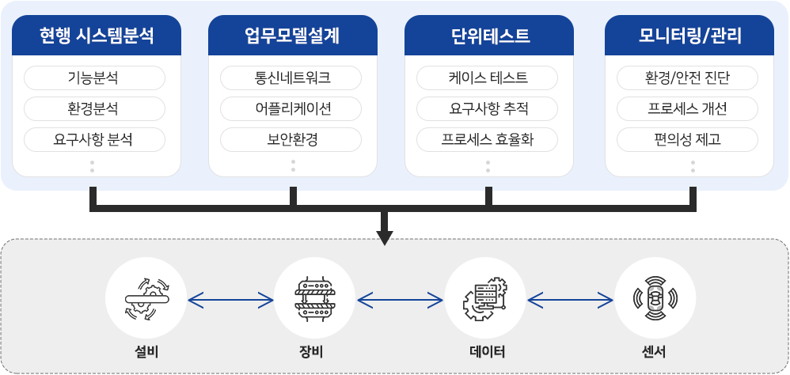

니즈에 대한 철저한 분석을 통한 최고의 제품과 서비스를 제공하고 있습니다

고객의 비즈니스 경쟁력 향상을 위한 IT시스템을 구축하여 업무 효율성 제고 및 기업의 경영목표 달성을 지원합니다.
데이터를 활용한 고객 최적화 라이프 솔루션, 효과적인 디지털 비즈니스를 위한 어플리케이션 개발 및 연동 서비스를 제공합니다.

주요서비스
생체 리듬 데이터를 활용하여 현대 사회에서 발생하는 생활상의 문제를 개선하는 핵심 과제를 발굴, 실행하여 고객의 밸류체인(제품 기획, 제조, 마케팅 판매, CS 등)을 구축하는 관련 인프라 플랫폼을 개발합니다.
디지털 비즈니스 운영을 위한 어플리케이션 개발 및 연동 서비스를 제공합니다.
Web/App 로그분석 및 접근성 등의 컨설팅부터 기획, 디자인, 개발 전문인력이 서비스 분석에서부터 구축까지
Total 서비스를 제공합니다.
서비스특징
 

기대효과
여러 환경에서 접속하는 사용자 데이터를 실시간으로 분석하여 최적화된 정보를 제공함으로써, 기업에 대한 고객 로열티 상승 효과를 기대할 수 있습니다.
고객 비즈니스의 세밀한 분석을 통해 기획부터 디자인, 개발 맞춤 플랫폼 제공으로 확실한 마케팅 효과를 기대할 수 있습니다.
고객의 비즈니스에 대한 이해를 바탕으로 IT시스템 구축 서비스를 제공합니다.

주요서비스
유해물질 처리 공정에서 발생되는 유해물질 데이터 수집, 연결, 분석과 예측으로 작업자의 안전을 지키고 효율적인 유해물질 제어를 위한 최적의 공정라인을 실행합니다.
실시간 원격 데이터 수집으로 작물의 생육환경을 관측하여 최적의 작물관리, 생산량 증가, 노동시간 감소 등을 개선할 수 있는 서비스 도구를 개발합니다.
시스템에서 일괄적으로 상품, 가격, 수량 정보를 태깅하여 실시간으로 반영하여 효과적인 재고 관리를 가능하게 하는 운영시스템입니다.
각종 시설물의 보안, 유지보수 관점에서 방문자 트래킹, 이상감지 등을 통한 통합관리시스템을 서비스합니다.
서비스특징
 

기대효과
복잡한 데이터를 연동하여 사용자 중심으로 시스템을 구성할 수 있어 휴먼 에러를 최소화할 수 있도록 업무 로직을 원활하게 구성할 수 있습니다.
작업 공정 및 시설물 관리에 있어 실시간으로 가시적인 관리가 가능하여 이상 상황에 대해 유연한 대응이 가능합니다.
고객의 비즈니스 경쟁력 향상을 위한 차별화된 컨설팅 역량과 전문인력으로 디지털 변화에 대응 가능한 최적의 솔루션을 제공합니다.

주요서비스
고객의 비즈니스에 맞춰 디지털 변화에 대응하는 전략을 수립하고 실행가능한 과제와 측정가능한 효과를 산출할 수 있도록 방법론을 제안합니다.
현재의 IT수준을 진단하고 전략 및 시스템 구현 방향을 제시하여 고객의 비즈니스에 최적화된 IT시스템 도입 및 운영 컨설팅 서비스를 제안합니다.
서비스특징


기대효과
디지털 기반의 서비스 개발로 브랜드 이미지를 개선하고, 고객에게 확장된 경험을 제공할 수 있습니다.
IT시스템 도입으로 합리적인 의사결정 실행을 통해 원가절감, 품질향상, 서비스 개선 등의 성과를 창출 가능합니다.